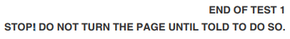

You've made it to the last lesson! If you'd like to review previous concepts before tackling the post-test, visit the Table of Contents. On previous lessons, you can click the interrobang ( ) icon in the upper right to access the Table of Contents.
Parentheses set off explanations and other remarks. (Remember parentheticals from Lesson 2?) Like commas, parentheses set off pieces that could be removed from the sentence without affecting the meaning.
Marcus (a lifelong fan of the Cubs) was thoroughly vindicated by his favorite team's win in 2016.
Punctuation always goes outside parentheses unless the parenthetical is a complete sentence.
Evelyn removed every trace of the project from her portfolio. (She insisted employers wouldn't want to see prototypes with the word "incorporated" spelled incorrectly.)
Dashes may be used to indicate a sudden break, transition, or abrupt change, but they also serve as a way to frame parentheticals. They highlight the information where a pair of parentheses would set it aside. On standardized tests, dashes are (almost) always paired.
Often, the test makers will sneak in a dash above or below the underlined portion for the question, so make sure you're paying close attention to the whole passage!
Check the dash after "things" - that means we need to pair it with Choice B. However, if there had been a comma after "things," we would want Choice C. Choice D's comma incorrectly separates what David does ("experiment with") to his jobs, classes, etc.
CORRECT! Often, the test makers will sneak in a dash above or below the underlined portion for the question, so make sure you're paying close attention to the whole passage!
On the ACT/SAT, you may be asked to do the following:
You'd think using question marks on the ACT/SAT is easy, right? Well, make sure that when you see tag questions, like the "right?" tacked onto the end of the previous sentence, you place a comma before the phrase.
How else would you expect our stellar students to perform, after all ?
Honestly? You're probably only going to see exclamation points (used for emphatic interjections, declarations, and commands) at the end of the test. Oh well!
Periods and commas always go inside quotation marks, while the placement of a question mark varies based on context. There are single (' ') and double (" ") quotation marks. Double quotes are used for direct quotes.
" There is nothing more deceptive than an obvious fact," he answered, laughing.
In the above example, Sherlock Holmes is speaking aloud in a direct quote. Marks are not needed for indrect quotes, as in the following example:
Watson said he would prefer to skip out on this upcoming case. Unfortunately, he had to fulfill his role as the series narrator.
If you happen to be quoting someone quoting someone else, it might look something like this:
"And then," Lyra exclaimed, outraged, " She asked, ' Are you sure you don't want to take a break? ' "
Notice how the double and single quotes are nested to show that that Lyra is speaking aloud, and quoting someone else asking her a question.
Keep punctuation simple in the case of quotes - you shouldn't need to mix end marks, or double up on your question marks.